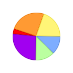
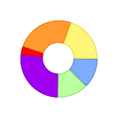

Overview
The pie charts display the model values by sectors in a circle.
There are two types of pie charts, in Marb: flat pie chart and 3D pie chart. It is also possible to display the pie chart as splitted (the sectors are apart from each other).
These viewes use the first column of the given QAbstractItemModel. The others are ignored.
An exemple of available renders for flat pie chart:
|  |  | ||
| Flat | Flat and splitted | Flat and drilled | Flat, splitted and drilled |
An exemple of available renders for 3D pie chart:

|

|

|
|
| Plain | Translucent | Wireframe | Plain and splitted |

|
|||
| Translucent and splitted | Wireframe and splitted |
How to use
PieChart and PieChart3D classes work as every class inheriting from QAbstractItemView:QStandardItemModel model( 6, 1 ); // Model with 1 column and 6 rows
qsrand( QDateTime::currentDateTime().toTime_t() ); // Init random function
for (int i = 0; i < model->rowCount(); ++i ) { // Fill the model
qreal v = (qrand() % ( 30 - 10) + 10); // random value between 10 and 30
model.setData( model.index( i, 0 ), v, Qt::DisplayRole ); // Set data for the row 'i'
}
Piechart pie; // Create a pie chart view
pie.setModel( model ); // Set the model
pie.show(); // Show the view
Piechart3D pie3D; // Create a pie chart view
pie3D.setModel( model ); // Set the model
pie3D.show(); // Show the view
model = QStandardItemModel( 6, 1 ) # Model with 1 column and 6 rows for i in range( model.rowCount() ): # Fill the model v = random.randint( 10, 30 ) # random value between 10 and 30 model.setData( model.index( i, 0 ), v, Qt.DisplayRole ) pie = Marb.PieChart() # Create a pie chart view pie.setModel( model ) # Set the model pie.show() # Show the view pie3D = Marb.PieChart3D() # Create a pie chart view pie3D.setModel( model ) # Set the model pie3D.show() # Show the view
Custom chart
Colors
The color of each part can be defined using the item role Qt::DecorationRole.
If any color has not be defined, the view will select a default color in the predefined colors.
This example demonstrates how to define a color with the item role:
QStandardItemModel* model = new QStandardItemModel(7,2);
qsrand( QDateTime::currentDateTime().toTime_t() );
QColor color( 0x083991 );
for (int i = 0; i < model->rowCount(); ++i ) {
qreal v = (qrand() % ( 30 - 10) + 10);
model->setData( model->index( i, 0 ), v, Qt::DisplayRole );
model->setData( model->index( i, 0 ), color, Qt::DecorationRole );
color = color.lighter( 120 );
}
PieChart pie; pie.setSplitted( true ); pie.setModel( model );
pie.show();
model = QStandardItemModel( 7, 2 ) color = QColor( 0x083991 ) for i in range( model->rowCount() ): v = random.randint( 10, 30 ) model.setData( model.index( i, 0 ), v, Qt.DisplayRole ) model.setData( model.index( i, 0 ), color, Qt.DecorationRole ) color = color.lighter( 120 ) pie = PieChart() pie.setSplitted( True ) pie.setModel( model ) pie.show()
An screenshot of the result given by the previous snippet.
Splitted and contiguous sectors
It is possible to split the sector in flat and 3D pie chart:
| Joined | Splitted |
|
| Close | Splitted |
The behavior will be different for the item selection.
If the chart is configured as contiguous sector, the selected items will be splitted. Otherwise, the items that are not selected will be more translucent than the selected items.
Documentation
void PieChart::setSplitted( bool splitted )
If splitted is true, the pie chart displays the sectors apart from each other. Otherwise, the sectors are contiguous.
bool PieChart::save( QString filename )
Save the pie chart to the image file given by filename. Returns true if the file is saved and false if an error has occured.
void PieChart::setDrilled( bool drilled )
Only available for flat pie chart.
If drilled is true, the pie chart displays a hole at its center.
void PieChart::setRender( Marb::Render render )
Only available for 3D pie chart.
Defines the chart render to render.